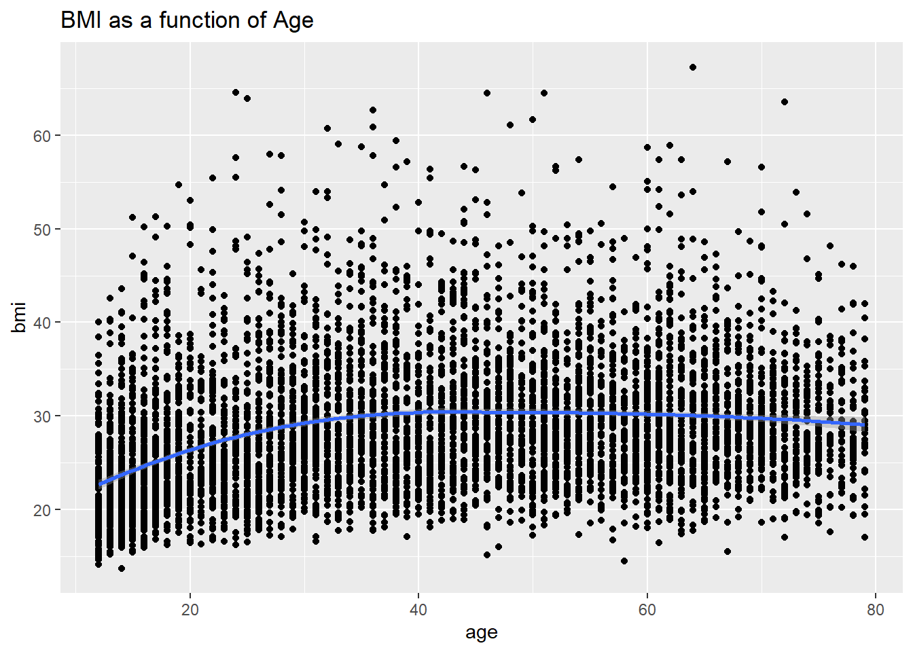
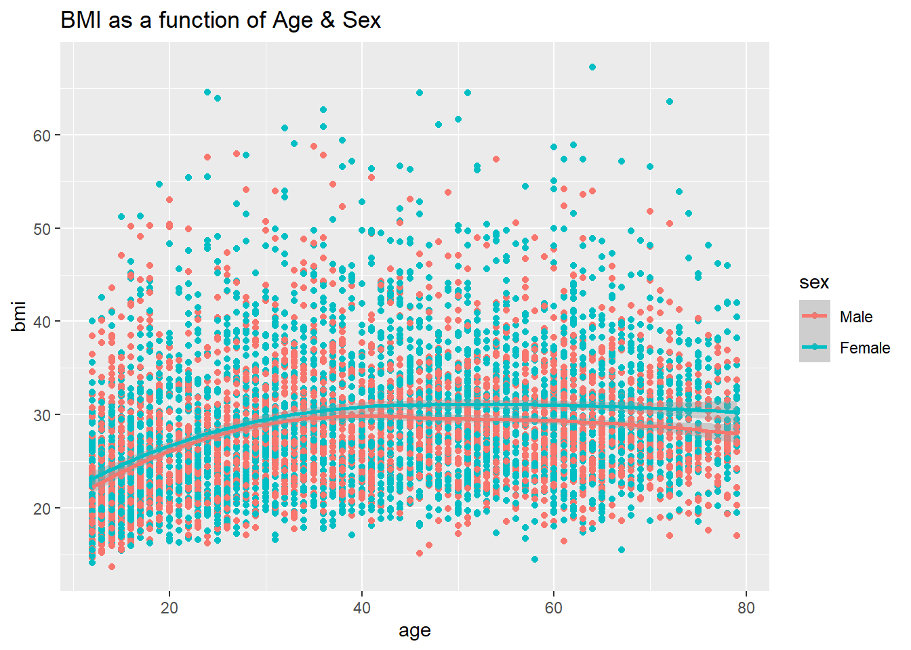
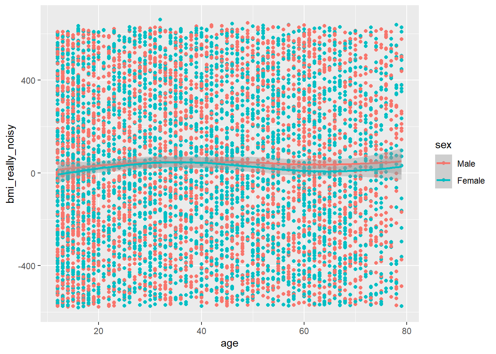

Code
library(dplyr)
library(knitr)
library(ggplot2)
library(scatterplot3d)
library(tidyr)Barboza-Salerno
2024-01-15
Click here for the Rmarkdown file associated with this webpage. By downloading the markdown file, you can run this on your computer. To save –> Right Click, Save link as…
This page has two purposes. The first is to illustrate how bias can compromise study results hence conclusions. The second purpose is to facilitate your ability to analyze data using R. For now, I will provide you with the data, which is located here. The data comes from the National Health and Nutrition Examination Survey that is freely available from the Centers for Disease Control located here. I strongly encourage you to think about this dataset for your final project, whether you are a PhD or MPH student. I used Examination data from the Body Measures portion of the survey, I used Survey data from the self-reported Smoking - cigarette use module, and I used Demographics data.
As you can see, the data are made available in separate modules. I have merged them for you to use, later on I will demonstrate how to merge data so you can replicate this example from scratch.
As an exercise, you should match up the variables in the documentation with the dataset produced from the code below. This is an important, and useful, task.
First, make sure you have the following packages installed:
It is essential to begin learning R with good coding practices. Note my indentation and use of verbiage in the code below.
Read my comments in the code, you must change the working directory unless you have a directory called “barboza-salerno.1” which I doubt you do :)
# Change the working directory on your computer
setwd("C:/Users/barboza-salerno.1/Downloads/")
# Read in the data set, note my data is located in the downloads directory
mydata <- read.csv(
"confounding_ex.csv",
stringsAsFactors = F,
na.strings = c(7,9,999)
)
# After reading in the data, rename columns so they are descriptive
colnames(mydata) <- c(
"SEQN",
"sex",
"age",
"hundrocigs",
"age_start",
"quit_ever",
"bmi",
"bmi_cat"
)
# I am transforming the categorical variables into factors that have levels.
# It is good practice to do that as you clean the data
mydata$sex <-as.factor(mydata$sex)
mydata$quit_ever <- as.factor(mydata$quit_ever)
mydata$hundrocigs <- as.factor(mydata$hundrocigs)
mydata$bmi_cat<- as.factor(mydata$bmi_cat)
# I am creating random "noise"
mydata$bmi_noisy <- jitter(mydata$bmi, factor=10000)
mydata$bmi_really_noisy <- jitter(mydata$bmi, factor=30000)
# The tidyverse allows me to wrangle (i.e., clean) the data in one line of code!
mydata <- mydata %>%
mutate(age_cat = cut(age, seq(0,80,20)))%>%
mutate(
sex = recode_factor(sex, "1"="Male", "2"="Female"),
) %>%
select(sex, bmi, bmi_noisy, bmi_really_noisy, age) %>%
filter(age < 80) %>% tidyr::drop_na() Here I plotted the Body Mass Index (BMI) as a function of age of survey respondent. BMI increases from 20 to 30 years of age before leveling off. Note, the trend line represents the average BMI for each age group. There is a lot of variability in BMI for each age.
Question: What other factors influence BMI across age that are not included here?
Now let’s add participant’s sex as an additional layer into the graph.


There is a similar age trend for BMI for both males and females but as expected the gap increases with age.
Below I add noise to the instrument that measures BMI. You can see a lot more variation around the curve. The noise in this example is random and appears that way. The curve is much less pronounced and the differences between males and females have been minimized.

Now, there is no more trend in the data, and no differences between males and females.
This demonstration illustrates the use of R to both create rudimentary but powerful charts that you can easily implement in your analysis as well as demonstrate how random error can influence results. I think that most people are of the impression that random error is not a huge problem because the “errors cancel out.” Clearly, this may not be the case. Here, I used real data and then added measurement error to the BMI variable. If this random error is part of our instrumentation, which is not something that is easily detected because we have no way to account for it in our analysis, then it influences our ability to detect significant differences across levels of independent variables (here, for e.g., sex differences in BMI by age).
Change the code above to select the variable “Tried to quit smoking” which is SMQ670 in the dataset. Redo the analysis to examine BMI by age for individuals who have tried to quit and those who have not. What do you conclude? Click here for solution.
---
title: "Bias"
author: "Barboza-Salerno"
---
---
title: "Bias Example"
author: "Barboza-Salerno"
date: "2024-01-15"
output: html_document
---
[Click here](bias.Rmd) for the Rmarkdown file associated with this webpage. By downloading the markdown file, you can run this on your computer. To save --> Right Click, Save link as...
```{r setup, include=FALSE}
knitr::opts_chunk$set(warning = FALSE, message = FALSE)
```
# Bias
This page has two purposes. The first is to illustrate how bias can compromise study results *hence conclusions.* The second purpose is to facilitate your ability to analyze data using R. For now, I will provide you with the data, which is located [here](https://github.com/bigdataforsocialjustice/PHHBHP7534/blob/main/confounding_ex.csv). The data comes from the National Health and Nutrition Examination Survey that is freely available from the Centers for Disease Control located [here](https://wwwn.cdc.gov/nchs/nhanes/continuousnhanes/default.aspx?BeginYear=2015). **I strongly encourage you to think about this dataset for your final project, whether you are a PhD or MPH student.** I used [Examination](https://wwwn.cdc.gov/nchs/nhanes/search/datapage.aspx?Component=Examination&CycleBeginYear=2015) data from the [Body Measures](https://wwwn.cdc.gov/Nchs/Nhanes/2015-2016/BMX_I.htm) portion of the survey, I used [Survey](https://wwwn.cdc.gov/nchs/nhanes/search/datapage.aspx?Component=Questionnaire&CycleBeginYear=2015) data from the self-reported [Smoking - cigarette use](https://wwwn.cdc.gov/Nchs/Nhanes/2015-2016/SMQ_I.htm) module, and I used [Demographics](https://wwwn.cdc.gov/nchs/nhanes/search/datapage.aspx?Component=Demographics&CycleBeginYear=2015) data.
As you can see, the data are made available in separate modules. I have merged them for you to use, later on I will demonstrate how to merge data so you can replicate this example from scratch.
::: {.callout-tip}
As an exercise, you should **match up the variables in the documentation with the dataset produced from the code below**. This is an important, and useful, task.
:::
First, make sure you have the following packages installed:
### R Packages
```{r}
library(dplyr)
library(knitr)
library(ggplot2)
library(scatterplot3d)
library(tidyr)
```
::: {.callout-warning}
It is essential to begin learning R with good coding practices. Note my indentation and use of verbiage in the code below.
:::
::: {.callout-note}
Read my comments in the code, you must change the working directory unless you have a directory called "barboza-salerno.1" which I doubt you do :)
:::
```{r}
# Change the working directory on your computer
setwd("C:/Users/barboza-salerno.1/Downloads/")
# Read in the data set, note my data is located in the downloads directory
mydata <- read.csv(
"confounding_ex.csv",
stringsAsFactors = F,
na.strings = c(7,9,999)
)
# After reading in the data, rename columns so they are descriptive
colnames(mydata) <- c(
"SEQN",
"sex",
"age",
"hundrocigs",
"age_start",
"quit_ever",
"bmi",
"bmi_cat"
)
# I am transforming the categorical variables into factors that have levels.
# It is good practice to do that as you clean the data
mydata$sex <-as.factor(mydata$sex)
mydata$quit_ever <- as.factor(mydata$quit_ever)
mydata$hundrocigs <- as.factor(mydata$hundrocigs)
mydata$bmi_cat<- as.factor(mydata$bmi_cat)
# I am creating random "noise"
mydata$bmi_noisy <- jitter(mydata$bmi, factor=10000)
mydata$bmi_really_noisy <- jitter(mydata$bmi, factor=30000)
# The tidyverse allows me to wrangle (i.e., clean) the data in one line of code!
mydata <- mydata %>%
mutate(age_cat = cut(age, seq(0,80,20)))%>%
mutate(
sex = recode_factor(sex, "1"="Male", "2"="Female"),
) %>%
select(sex, bmi, bmi_noisy, bmi_really_noisy, age) %>%
filter(age < 80) %>% tidyr::drop_na()
```
## Random Error (without bias)
Here I plotted the Body Mass Index (BMI) as a function of age of survey respondent. BMI increases from 20 to 30 years of age before leveling off. Note, the trend line represents the average BMI for each age group. There is a lot of variability in BMI for each age.
::: {.callout-note}
**Question**: What other factors influence BMI across age that are not included here?
:::
Now let’s add participant’s sex as an additional layer into the graph.
```{r}
# Scatter plot with regression line
ggplot(mydata, aes(x = age, y = bmi)) +
geom_point()+
geom_smooth(method = "loess") +
ggtitle("BMI as a function of Age")
```
```{r}
ggplot(mydata, aes(x = age, y = bmi, color=sex)) +
geom_point() +
geom_smooth(method = "loess") +
ggtitle("BMI as a function of Age & Sex")
```
There is a similar age trend for BMI for both males and females but as expected the gap increases with age.
### Simulating noise in the BMI measure
Below I add noise to the instrument that measures BMI. You can see a lot more variation around the curve. The noise in this example is random and appears that way. The curve is much less pronounced and the differences between males and females have been minimized.
```{r}
ggplot(mydata, aes(x = age, y = bmi_noisy, color=sex)) + geom_point()+
geom_smooth(method = "loess")
```
### More randomness
```{r}
ggplot(mydata, aes(x = age, y = bmi_really_noisy, color=sex)) + geom_point()+
geom_smooth(method = "loess")
```
Now, there is no more trend in the data, and no differences between males and females.
# Discussion
This demonstration illustrates the use of R to both create rudimentary but powerful charts that you can easily implement in your analysis as well as demonstrate how
random error can influence results. I think that most people are of the impression that random error is not a huge problem because the "errors cancel out." Clearly,
this may *not* be the case. Here, I used real data and then added measurement error to the BMI variable. If this random error is part of our instrumentation, which
is not something that is easily detected because we have no way to account for it in our analysis, then it influences our ability to detect significant differences across levels of independent variables (here, for e.g., sex differences in BMI by age).
::: {.callout-note }
Change the code above to select the variable *"Tried to quit smoking"* which is SMQ670 in the dataset. Redo the analysis to examine BMI by age for individuals who have tried to quit and those who have not. What do you conclude? Click [here](biasanswer.qmd) for solution.
:::